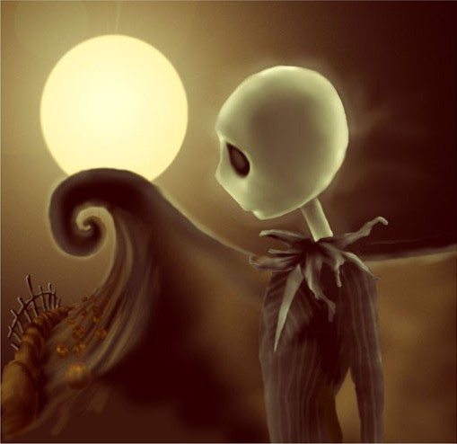
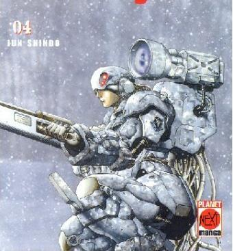
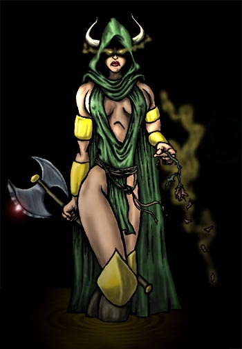

Forums galactiques > Taverne galactique : lieu de discussion informel > Pour discuter et aider
| Valord Réputation à la taverne : -11 08/09 ETU 19:53 | Score : 0 Détails J'aimerai avoir de bon conseil et me faire de potes!
| ||
| Picsou Réputation à la taverne : 215  08/09 ETU 20:51 | Score : 3 Détails Pauvre Valord : dès qu'il parle, il se récolte des votes négatifs !
Aidez un peu les nouveaux commandants ! De quel genre de conseil avez-vous besoin ? Picsou, assistant social galactique. | ||
| Jack Skellington Réputation à la taverne : 20  08/09 ETU 20:58 | Score : 0 Détails je suis a votre écoute, Valord, meme si ma tres faible experience en tant que commandant servira plus a faire briller le savoir du canard qui se trouve a nos cotés...
Picsou, nous vous ecoutons !!! | ||
| Picsou Réputation à la taverne : 215 08/09 ETU 21:06 | Score : 2 Détails Aïe...un exposé ?C'était pas prévu ça !
... heu... ... en fait, je préférerais répondre à tes questions, si possible ! ... heu... ... allez, soyons fou !En bonus, je peut exaucé 3 de tes voeux, pourvu qu'ils soient réalisables (me demande pas de te livrer Chiana sur un plateau en or...j'ai abîmé le seul que j'avais en le mettant dans le lave-vaiselle). Picsou, génie de la mare au canard ! | ||
| Jack Skellington Réputation à la taverne : 20 08/09 ETU 21:10 | Score : 1 Détails pour moi le bonheur se résime a trois choses justement :
etre respecté, etre dans une bonne coalition, malheureusement je ne suis pas tres bien informé dessus et trois, que tous les gens d'Halloween me rejoigne dans mon vaisseau donc tu me réalise ca ok ? je te fais confiance attention !!! | ||
| Picsou Réputation à la taverne : 215 08/09 ETU 21:14 | Score : 1 Détails etre respecté => tu as déjà le respect du plus beau et du plus grand de tout les canards (c'est pas rien). Pour le reste, il faut faire tes preuves : pas de coups bas (ou alors en cachette ^^) et beaucoup de diplomatie.
etre dans une bonne coalition, malheureusement je ne suis pas tres bien informé dessus => contacte Mablane, le meilleur leader de coalition selon moi. Il en a recré un dernièrement, et je pense que tu peut y aller en toute confiance si tu es pour la liberté et la démocratie. et trois, que tous les gens d'Halloween me rejoigne dans mon vaisseau => heu...tu veux pas plutôt un Big Mac ? autre chose mon prince ?^^ | ||
| Jack Skellington Réputation à la taverne : 20 08/09 ETU 21:19 | Score : 0 Détails bah a part que tu as réalisé seulement 1/2 souhait sur les trois, juste que tu me dise qui est ce Mablane dont tu parle ?
Est il chez les gentils ou chez les méchants ? | ||
| Picsou Réputation à la taverne : 215 08/09 ETU 21:22 | Score : 2 Détails Ca dépend : une nympho qui se balade en string rouge, tu trouves qu'elle est gentille ou méchante ?^^
J'ai fait ce que j'ai pu avec tes souhaits !Ils ne t'étaient pas destinés au début d'ailleurs !Mais c'est pas grave : j'aime tellement rendre service aux gens ! | ||
| Jack Skellington Réputation à la taverne : 20 08/09 ETU 21:25 | Score : 2 Détails Et moi qui pensai que Mablane etait un homme, heureusement que vous me permettez de m'éloigner de ce genre d'individus, je ne pensai pas que Mablane etait un travesti nymphomane...
On m'avait dit qu'il etait le plus grand chef de coalition, d'ailleurs c'ets vous qui m'avez dit ca non ? | ||
| Picsou Réputation à la taverne : 215 08/09 ETU 21:30 | Score : 0 Détails Je parlais de Chiana...je me suis mal fait comprendre !
Ils sont un peu ennemi en fait : d'un côté Mablane et de l'autre Chiana, nymphomane en string rouge. Excusez moi pour le contre-sens. Comme je dis toujours : errare canardum est ! Mablane en string rouge...à voir je pense !un string de droitier ou de gaucher ?^^(petit délire entre Mablane et moi). édit (10 minutes plus tard) : tiens c'est bizarre cette sensation de solitude...? | ||
| Jack Skellington Réputation à la taverne : 20 08/09 ETU 22:02 | Score : 1 Détails pardonnez moi, pour reprendre votre locution : errare skelletum est
mais il est toujours plus tentant de voir une fille en string rouge, que de voir Mablane en string rouge, n'est il pas ? quoi qu'il en soit je ne peux juger un livre a sa couverture, tout comme je ne peux me permettre de juger un canard a sa redingote... et pardon pour l'attente, mai je suis tellement emerveillé par les nouvelles choses qui m'entoure, que j'en oublie parfois de revenir "sur terre" si vous me permettez l'expression mais que vois-je ? que vois-je ? du rouge du bleu du vert... | ||
| Picsou Réputation à la taverne : 215 09/09 ETU 16:26 | Score : 0 Détails J'imaginais juste Mablane en string rouge... Je ne sais pas si cela lui ferait de la publicité supplémentaire pour sa nouvelle coa ?^^
On ne juge peut-être pas un livre à sa couverture, mais elle compte pour beaucoup dans la vente de l'ouvrage. Chacun se couvre comme il peut avec ce qu'il a sous la main... What's that ?what's that ? | ||
| Marek Réputation à la taverne : 0  09/09 ETU 21:38 | Score : 1 Détails bijour bijour
tient, mais qui est donc ce petit personnage avec des plumes??? (bon j'arrete de deconner) *Marek arrive dans la salle, fusil accrocher derrier son dos* "bonjour chére commandant, cela m'a triste qu'il n'y a pas de commandante, pour moi, une fille en string rouge, c'est quelqu'un qui vas dans les chambre et non le vaisseaux, je peut vous offrir mon imble aide, moi je dit, que le couvertur fait tout, quand deja on voit le livre avec 500 page, c'est choquant, et si en plus... (ame sensible s'abstenir) si en plus, y'a ecrit Francais dessus, c'est la mort assurer" *appercoit le canard* "miam, quelqu'un a des pommes?" hj: desoler pour les fautes^^ | ||
| Picsou Réputation à la taverne : 215 09/09 ETU 21:53 | Score : 0 Détails Sexiste et canardophobe ?
Vous avez tout pour me mettre en rogne !(et pas en rognons !) Si en plus vous faites un faute par mot... allez : essayez d'être plus convaincant la prochaine fois! *même joueur joue encore : TRY AGAIN !!!* édit : un canard avec des plumes, c'est assez courant, pourtant vous semblez scandalisé. | ||
| Marek Réputation à la taverne : 0 09/09 ETU 22:02 | Score : 0 Détails je ne suis pas sexiste, on a tous besion de preserver notre espece, car, si cela continu, on part tous a notre perte, de plus, les cuisse de canard son suculente bien faite, ma cuisinier attitre se feraun plaisir de vous montré comment faut faire, ou preferer vous les autre methode, monsieur le canard, votre peuple ne me fait pas peur, j'en ai vu d'autre
hj: ceci est du RP, je tient aps a entre en guerre contre des cannard lol | ||
| Picsou Réputation à la taverne : 215 09/09 ETU 22:08 | Score : 0 Détails Ne vous inquiétez pas, je n'entre en guerre avec personne !Je suis un grand pacifiste !
Si ! Vous êtes sexiste : vous laisez les cannes...heu non les femmes dans les cuisines et non sur les vaisseaux !Elles ont notre égales !C'est fini le temps de la Bi*** (ce livre que Dieu a écrit pour en faire un best-seller : quel succès d'ailleurs !) où elle sortait de la côte de l'homme ! Femmes !Soulevez-vous contre le bourreau sexiste ! Où sont les femmes ?Avec leurs juste-au-corps de charme ?(genre string rouge pour Chiana...) | ||
| Marek Réputation à la taverne : 0 09/09 ETU 22:19 | Score : 0 Détails tu a faut cannard, tout a fait faut, je suis allé a une eglise, et on m'a dit, que les femme, sont les complement de l'homme, que se apsse t'il si les hommes font naitre les enfant et els femme aprtent a la guerre, les femme sont le complement de l'homme, suel elle peuvent mettre au monde et s'occupé des enfant, je comprend mon peuple et je le reparti normalement
hj: les femme son sur les vazisseaux, enfin, les cuisne des vaiseaux hihi | ||
| Jack Skellington Réputation à la taverne : 20 09/09 ETU 23:41 | Score : 0 Détails Il est dommage que les ames Yulée et Chiana ne soient pas a l'écoute de cette conversation, monsieur, car il aurait fallu qu'un membre féminin vous apprenne la notion d'égalité...
mais peut etre me trompe je ? | ||
| Hel Réputation à la taverne : 13  10/09 ETU 00:40 | Score : 2 Détails ***Une fine fumée noir apparut dans la salle. Elle se concentra dans un point au sol. Ressemblant à un trou, les terminaisons de la fumée écrivaient des symboles sur le sol. Soudainement, une forme diabolique commença à emerger du trou noir.
Hel, la Déesse, fille de Loki avait entendu les propos parfaitement mysogine de l'homme se cachant derrière son épaisse armure.*** "Je suis consternée par votre bêtise, simple mortel...Qui êtes-vous pour juger la condition des Femmes alors que vous n'en avez jamais cotoyé une ?! Vous n'êtes qu'un vil porc que je m'en vais pourfendre, dés que mes forces seront assez importante, c'est à dire dans une semaine ou deux. Marek, pauvre fou que vous êtes, je viens vous détruire pour laver l'affront fait à nous les femmes, mais je le fais aussi par amusement... ***Aprés avoir pronconcer ses mots, Hel partit dans une épaisse brume d'un noir de jais.*** | ||
| Deus Machina Réputation à la taverne : 141  10/09 ETU 00:53 | Score : 1 Détails *Le commandant Deus Machina apparut et parla aux quelques personnes en questions : *
Hel, je vous en prie, n'attaquez pas Marek, vous tueriez des innoncents, dont des femmes qu'il en se gênera pas d'envoyer en première ligne comme chair à canon...... Laissez moi parler avec Marek et tenter de le remettre dans le chemin de la tolérance, et si c'est un échec, unissons nos forces pour massacrer cet être vil est intolérant. N'ayons aucune pitié pour les sexistes, mais donnons leur une seconde chance..... |
Forums galactiques > Taverne galactique : lieu de discussion informel > Pour discuter et aider